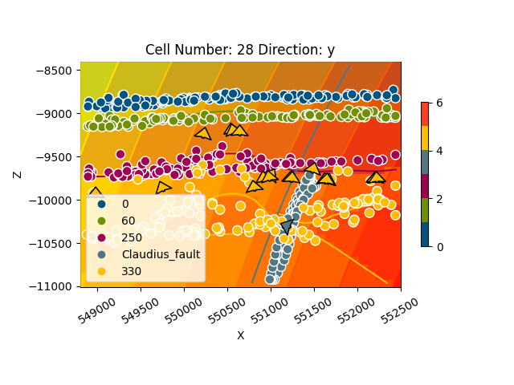

Note
Go to the end to download the full example code.
Claudius¶
import sys, os
# Importing gempy
import gempy as gp
import gempy_viewer as gpv
# Aux imports
import numpy as np
import pandas as pn
Loading data from repository:¶
With pandas we can do it directly from the web and with the right args we can directly tidy the data in gempy style:
data_path = os.path.abspath('../../data/input_data/Claudius')
reduce_data_by = 30
dfs = []
for letter in 'ABCD':
dfs.append(
pn.read_csv(
filepath_or_buffer=f"{data_path}/{letter}Points.csv",
sep=';',
names=['X', 'Y', 'Z', 'surface', 'cutoff'],
header=0
)[::reduce_data_by]
)
# Add fault:
dfs.append(
pn.read_csv(
filepath_or_buffer=f"{data_path}/Fault.csv",
names=['X', 'Y', 'Z', 'surface'],
header=0,
sep=','
)
)
surface_points = pn.concat(dfs, sort=True)
surface_points['surface'] = surface_points['surface'].astype('str')
surface_points.reset_index(inplace=True, drop=False)
surface_points.tail()
surface_points.dtypes
index int64
X float64
Y float64
Z float64
cutoff float64
surface object
dtype: object
How many points are per surface
surface_points.groupby('surface').count()
Now we do the same with the orientations:
dfs = []
for surf in ['0', '330']:
o = pn.read_csv(
filepath_or_buffer=f"{data_path}/Dips.csv",
sep=';',
names=['X', 'Y', 'Z', 'G_x', 'G_y', 'G_z', '-'],
header=1
)
# Orientation needs to belong to a surface. This is mainly to categorize to which series belong and to
# use the same color
o['surface'] = surf
dfs.append(o)
orientations = pn.concat(dfs, sort=True)
orientations.reset_index(inplace=True, drop=False)
orientations.tail()
orientations.dtypes
index int64
- float64
G_x float64
G_y float64
G_z float64
X float64
Y float64
Z float64
surface object
dtype: object
Data initialization:¶
Suggested size of the axis-aligned modeling box: Origin: 548800 7816600 -8400 Maximum: 552500 7822000 -11010
Suggested resolution: 100m x 100m x -90m (grid size 38 x 55 x 30)
Number of voxels:
np.array([38, 55, 30]).prod()
surface_points_table: gp.data.SurfacePointsTable = gp.data.SurfacePointsTable.from_arrays(
x=surface_points['X'].values,
y=surface_points['Y'].values,
z=surface_points['Z'].values,
names=surface_points['surface'].values
)
orientations_table: gp.data.OrientationsTable = gp.data.OrientationsTable.from_arrays(
x=orientations['X'].values,
y=orientations['Y'].values,
z=orientations['Z'].values,
G_x=orientations['G_x'].values,
G_y=orientations['G_y'].values,
G_z=orientations['G_z'].values,
names=orientations['surface'].values,
name_id_map=surface_points_table.name_id_map # ! Make sure that ids and names are shared
)
structural_frame: gp.data.StructuralFrame = gp.data.StructuralFrame.from_data_tables(
surface_points=surface_points_table,
orientations=orientations_table
)
geo_model: gp.data.GeoModel = gp.create_geomodel(
project_name='Claudius',
extent=[548800, 552500, 7816600, 7822000, -11010, -8400],
resolution=[38, 55, 30],
refinement=5,
structural_frame=structural_frame
)
group_fault = gp.data.StructuralGroup(
name='Fault1',
elements=[geo_model.structural_frame.structural_elements.pop(-2)],
structural_relation=gp.data.StackRelationType.FAULT,
fault_relations=gp.data.FaultsRelationSpecialCase.OFFSET_ALL
)
geo_model.structural_frame.get_group_by_name("default_formation").elements.pop(-1)
# Insert the fault group into the structural frame:
geo_model.structural_frame.insert_group(0, group_fault)
gp.set_is_fault(
frame=geo_model.structural_frame,
fault_groups=[geo_model.structural_frame.get_group_by_name('Fault1')]
)
print(geo_model)
{'_interpolation_options': InterpolationOptions(kernel_options={'range': 1.7, 'c_o': 10, 'uni_degree': 1, 'i_res': 4, 'gi_res': 2, 'number_dimensions': 3, 'kernel_function': <AvailableKernelFunctions.cubic: KernelFunction(base_function=<function cubic_function at 0x7fbc62cb1bd0>, derivative_div_r=<function cubic_function_p_div_r at 0x7fbc62cb1e10>, second_derivative=<function cubic_function_a at 0x7fbc62cb1ea0>, consume_sq_distance=False)>, 'kernel_solver': <Solvers.DEFAULT: 1>, 'compute_condition_number': False, 'optimizing_condition_number': False, 'condition_number': None}, evaluation_options={'_number_octree_levels': 5, '_number_octree_levels_surface': 4, 'octree_curvature_threshold': -1, 'octree_error_threshold': 1.0, 'octree_min_level': 2, 'mesh_extraction': True, 'mesh_extraction_masking_options': <MeshExtractionMaskingOptions.INTERSECT: 3>, 'mesh_extraction_fancy': True, 'evaluation_chunk_size': 500000, 'compute_scalar_gradient': False, 'verbose': False}, temp_interpolation_values=<gempy_engine.core.data.options.temp_interpolation_values.TempInterpolationValues object at 0x7fbc31c9a530>, debug=True, cache_mode=CacheMode.IN_MEMORY_CACHE, cache_model_name=, block_solutions_type=BlockSolutionType.OCTREE, sigmoid_slope=50000, debug_water_tight=False),
'grid': Grid(values=array([[ 548848.68421053, 7816649.09090909, -10966.5 ],
[ 548848.68421053, 7816649.09090909, -10879.5 ],
[ 548848.68421053, 7816649.09090909, -10792.5 ],
...,
[ 552451.31578947, 7821950.90909091, -8617.5 ],
[ 552451.31578947, 7821950.90909091, -8530.5 ],
[ 552451.31578947, 7821950.90909091, -8443.5 ]]),
length=array([], dtype=float64),
_octree_grid=None,
_dense_grid=RegularGrid(resolution=array([38, 55, 30]),
extent=array([ 548800., 552500., 7816600., 7822000., -11010., -8400.]),
values=array([[ 548848.68421053, 7816649.09090909, -10966.5 ],
[ 548848.68421053, 7816649.09090909, -10879.5 ],
[ 548848.68421053, 7816649.09090909, -10792.5 ],
...,
[ 552451.31578947, 7821950.90909091, -8617.5 ],
[ 552451.31578947, 7821950.90909091, -8530.5 ],
[ 552451.31578947, 7821950.90909091, -8443.5 ]]),
mask_topo=array([], shape=(0, 3), dtype=bool),
_transform=None),
_custom_grid=None,
_topography=None,
_sections=None,
_centered_grid=None,
_transform=None,
_octree_levels=-1),
'input_transform': {'_cached_pivot': None,
'_is_default_transform': False,
'position': array([ -550658.0605 , -7819213.97425586, 9824.6748045 ]),
'rotation': array([0., 0., 0.]),
'scale': array([9.56397917e-05, 9.56397917e-05, 9.56397917e-05])},
'meta': GeoModelMeta(name='Claudius',
creation_date=None,
last_modification_date=None,
owner=None),
'structural_frame': StructuralFrame(
structural_groups=[
StructuralGroup(
name=Fault1,
structural_relation=StackRelationType.FAULT,
elements=[
Element(
name=Claudius_fault,
color=#527682,
is_active=True
)
]
),
StructuralGroup(
name=default_formation,
structural_relation=StackRelationType.ERODE,
elements=[
Element(
name=0,
color=#015482,
is_active=True
),
Element(
name=250,
color=#9f0052,
is_active=True
),
Element(
name=330,
color=#ffbe00,
is_active=True
),
Element(
name=60,
color=#728f02,
is_active=True
)
]
)
],
fault_relations=
[[False, True],
[False, False]],
}
We are going to increase the smoothness (nugget) of the data to increase the conditional number of the matrix:
gp.modify_surface_points(geo_model, nugget=0.01)
Also the original poles are pointing downwards. We can change the direction by calling the following:
gp.modify_orientations(geo_model, polarity=-1)
We need an orientation per series/fault. The faults does not have orientation so the easiest is to create an orientation from the surface points availablle:
element = geo_model.structural_frame.get_element_by_name("Claudius_fault")
new_orientations: gp.data.OrientationsTable = gp.create_orientations_from_surface_points_coords(
xyz_coords=element.surface_points.xyz
)
gp.add_orientations(
geo_model=geo_model,
x=new_orientations.data['X'],
y=new_orientations.data['Y'],
z=new_orientations.data['Z'],
pole_vector=new_orientations.grads,
elements_names="Claudius_fault"
)
gpv.plot_2d(geo_model, direction='y')

<gempy_viewer.modules.plot_2d.visualization_2d.Plot2D object at 0x7fbc73957f10>
We will need to separate with surface belong to each series:
gp.map_stack_to_surfaces(
gempy_model=geo_model,
mapping_object={
'Default series': ('0', '60', '250'),
'Fault': 'Claudius_fault',
'Uncomformity': '330',
}
)
So far we did not specify which series/faults are actula faults:
gp.set_is_fault(
frame=geo_model.structural_frame,
fault_groups=[geo_model.structural_frame.get_group_by_name('Fault')]
)
geo_model.structural_frame
geo_model.interpolation_options.kernel_options.range = 1
gp.compute_model(
geo_model,
gp.data.GemPyEngineConfig(
backend=gp.data.AvailableBackends.numpy,
use_gpu=False,
dtype='float64'
)
)
Setting Backend To: AvailableBackends.numpy
Chunking done: 73 chunks
Chunking done: 13 chunks
Chunking done: 31 chunks
Chunking done: 6 chunks
Chunking done: 6 chunks
Chunking done: 36 chunks
Chunking done: 7 chunks
Chunking done: 15 chunks
Chunking done: 35 chunks
Chunking done: 6 chunks
Chunking done: 15 chunks
Chunking done: 6 chunks
sect = ['mid']
gpv.plot_2d(geo_model, cell_number=sect, series_n=1, show_scalar=True, direction='x')

<gempy_viewer.modules.plot_2d.visualization_2d.Plot2D object at 0x7fbc77476d10>
gpv.plot_2d(geo_model, cell_number=sect, show_data=True, direction='x')

<gempy_viewer.modules.plot_2d.visualization_2d.Plot2D object at 0x7fbc77475840>
gpv.plot_2d(geo_model, cell_number=[28], series_n=0, direction='y', show_scalar=True)
gpv.plot_2d(geo_model, cell_number=[28], series_n=1, direction='y', show_scalar=True)
gpv.plot_2d(geo_model, cell_number=[28], series_n=2, direction='y', show_scalar=True)

- 

<gempy_viewer.modules.plot_2d.visualization_2d.Plot2D object at 0x7fbbfb3d6830>
gpv.plot_2d(geo_model, cell_number=[28], show_data=True, direction='y')

<gempy_viewer.modules.plot_2d.visualization_2d.Plot2D object at 0x7fbbd4eb5930>
# sphinx_gallery_thumbnail_number = 8
gpv.plot_3d(geo_model, show_lith=True, show_data=True, show_boundaries=True)
<gempy_viewer.modules.plot_3d.vista.GemPyToVista object at 0x7fbbe0b12920>
Total running time of the script: (2 minutes 26.191 seconds)